VINS-Mono Study
This page is intended to present my study note from the paper "VINS-Mono: A Robust and Versatile Monocular Visual-Inertial State Estimator". And it will also be one of the key components in localization architecture in Wave3 project. This document will list all my thinking and answer rather than go through the math equation detailly.
Why we need to fuse the visual information with Inertial measurement
The table below compares the localization solution between IMU and Visual Odometry,
|
|
Advantage |
Disadvantage |
|
IMU |
|
|
|
Visual Odometry |
|
|
In general,
IMU is suitable for quick motion estimation in short time.
VO is suitable for slow motion estimation in long time.
So we can fuse the VO and IMU information to improve the robustness of localization system. The bias of IMU could be estimated with visual localization so that we can control the accumulated error/drift for motion estimation. And also we can use IMU to improve the VO localization robustness for quick motion case.
Actually, there are two ways to fuse the video and IMU information for localization purpose.
Loosely coupled solution
It will fuse the localization result from both IMU and Video with post processing. And this kind of fusion operation will not optimize the result/state from IMU and Video. The Kalman filter and its variants are the most popular solution.
As figure below, the position, rotation and velocity from IMU or video will not be optimized.
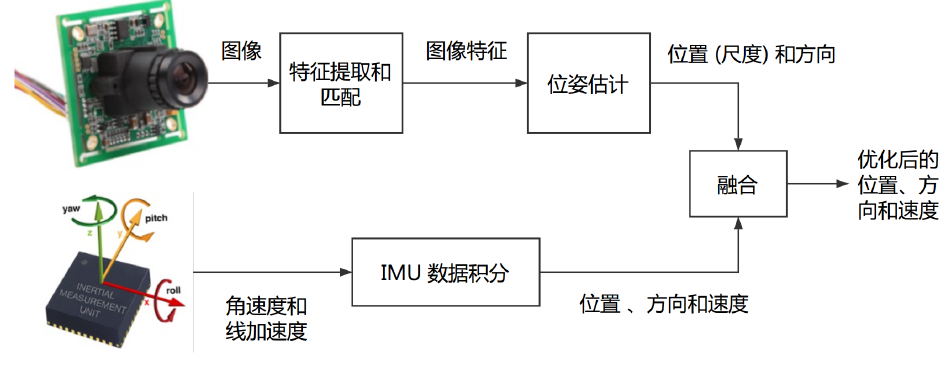
Tightly coupled solution
The tightly coupled fusion will jointly optimize the parameter/state from sensors and localization result. So it will not only output the localization result and also optimize the bias for IMU and scaling factor + feature locations for video. The MSCKF ( Multi-State Constraint Kalman Filter ) and non-linear least square optimization are most famous. Of course, VINS-Mono adopts tightly coupled solution with non-linear square optimization.
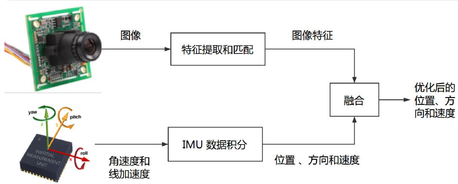
why we need tightly coupled solution,
both VO and IMU are not able to provide robust pose estimation. e.g. bias → IMU, scale factor → mono camera
Even if after bundle adjustment, the pose from purely video odometry(without IMU information) is not globally optimal or accurate enough.
With tightly coupled solution, all measurement and motion parameters can be optimized at the same time. and there is high chance to get better localization performance.
What is the scope of VINS-Mono
Here is the full pipeline of VINS-Mono.
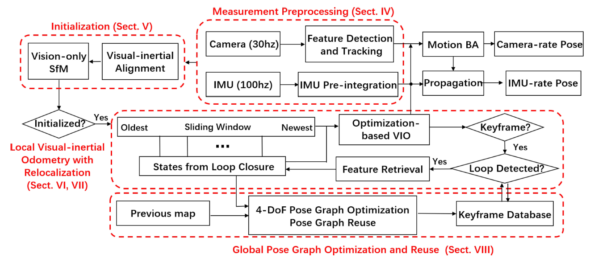
The system starts with measurement preprocessing (see Section IV)
extract image and parse IMU measurement info
prepare tracked feature points
compute the motion between current and previous time stamp
The initialization procedure (see Section V) provides all necessary values for bootstrapping the subsequent nonlinear optimization-based VIO.
calibrate the gyroscope bias for IMU with video correction
compute the scale factor for video with IMU correction, each 3D landmarks from video will be under the meter unit now.
estimate the gravity in camera coordinate at time 0 so that we can align the camera coordinate with body(IMU) coordinate.
The VIO with re-localization modules (see Sections VI and VII) tightly fuses pre-integrated IMU measurements, feature observations, and re-detected features from the loop closure.
with m arginalization operation, it maintain a sliding window to control the computation consumption
based on common vision between map/history and current observation, the loop closure constraints will be established with visual feature dictionary → eliminate drift in sliding window
fix all parameters outside the window, and execute the nonlinear optimization inside the sliding window to get the localization result which is locally consistent.
the keyframe is selected by checking the parallax of tracked feature points among nearby images in time sequence.
Finally, the pose graph module (see Section VIII) performs global optimization to eliminate drift and achieve reuse purpose.
with this step, it could support offline mapping + online localization now.
The global pose graph(outside the sliding window) will be optimized with constraints
Sequential Edge → relative pose transformation of nearby vertex in time sequence, provided by VIO (see Sections VI and VII, localization result inside the sliding window)
Loop-Closure Edge → relative pose transformation of nearby vertex in space (common vision), provided by loop closure detection (see Sections VI and VII)
save the pose graph + feature point descriptors
What's IMU Pre-integration and difference against traditional IMU usage
Let's say there is a 6-axis IMU working at 100hz, it measures rotation velocity(roll, pitch, yaw) and linear acceleration(x, y, z) of body frame. So every 10ms, we can get the rotation velocity and linear acceleration. If we want to estimate the motion (position p, velocity v and rotation q) between different time stamp, we have to use the integrate them with time interval. The equation below shows the relative motion of keyframe at time k+1 and k.
Please be noted
there are many IMU measurements indexed by t between k to k+1
the motion state of k+1 is based on k
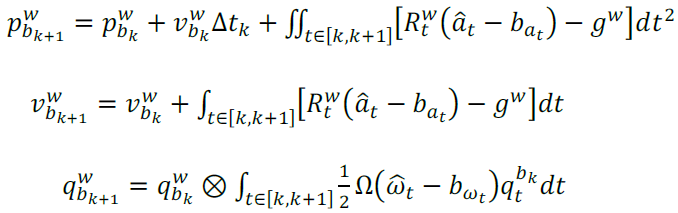
The images below shows different rates for IMU and camera.
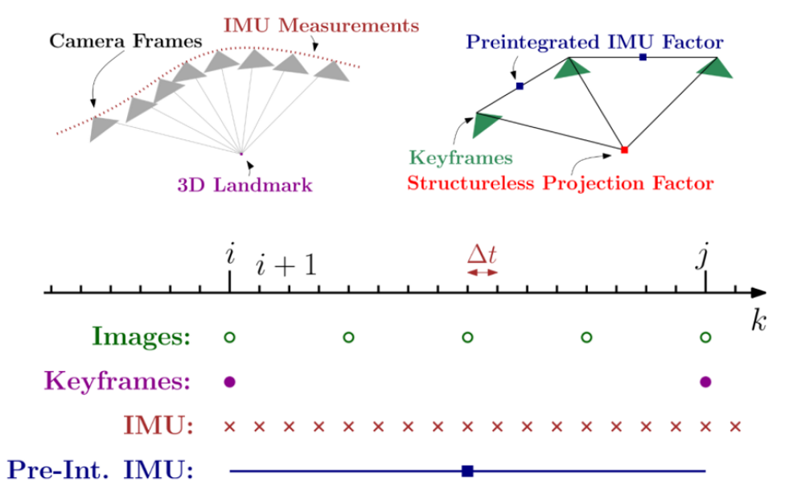
We can see from the image, there are many IMU measurements between two keyframe from camera. Since the VINS-Mono is a tightly coupled fusion solution, it will estimate the pose of key frame and the velocity, position, rotation, bias for IMU simultaneously. And there is constraint (I call it "motion residual"→ pre-integration residual in paper) between keyframe pose and motion measurement from IMU. After the optimization, the error between keyframe pose and IMU measurement will be minimized.
Theoretically , for every time of optimization iteration, there is a small shift happened on keyframe pose at time k, we need to re-compute the IMU motion measurement at time k+1. because its initial state of time k is changed. So they are tightly coupled.
In addition to the high frequency of IMU, it's infeasible to compute the state of IMU motion measurement with propagation/r ecursion method during optimization iteration. That will be a huge computation burden.
example
E.g. if there are 100 iteration in nonlinear optimization, we need to compute the IMU motion measurement 100 times. and each time there are many IMU sensor readings.
Can we separate the IMU motion measurement from its initial state so as to save our CPU? We don't want to waste computation power for optimization iteration.
Yes. That's why we use the pre-integration. It's defined as below and has no psychical description. Now, there is only one "virtual" motion observation between keyframe k and k+1 with lowest frequency.
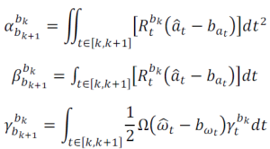
And the relationship between pre-integration and previous IMU motion is as followed.
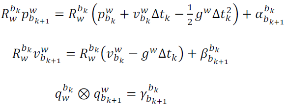
how to use IMU in bosch road signature
For loosely coupled solution in "Bosch Radar Road Signature", the IMU and wheel speed will be fused as odometry with EKF. This odometry will be treated as relative transform constraint between nearby body frames. And after the global optimization, the odometry itself will not be optimized at the same time. As for odometry calibration in post processing, it's another story out of this scope.
How to interpret the cost function of VINS-Mono and its residual item
During localization, the VINS-Mono will optimize the three items inside the sliding window simultaneously (tightly coupled). Let's assume there is no map before. So the re-localization is invalid at the beginning.
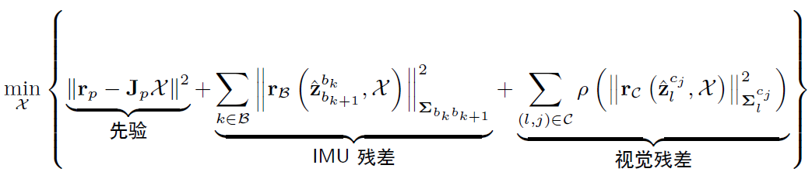
To be evaluated,
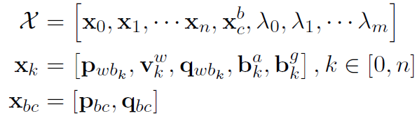
where  is the state of keyframe at time k, including position, velocity, rotation, linear accelerate bias and gyroscope bias.
is the state of keyframe at time k, including position, velocity, rotation, linear accelerate bias and gyroscope bias.  is the inverse depth of 3D landmark in map.
is the inverse depth of 3D landmark in map.  is the relative transformation between IMU sensor and camera.
is the relative transformation between IMU sensor and camera.
All these residual will be discussed later. Here is some gotta feeling.
Prior Constraint
The sliding window has a fixed length, the observation and pose estimation at previous time stamp will be margined (removed) finally. This prior constraint will make sure the optimization at late time will not forget the previous information (e.g. the landmark i observed by camera j should be at place xxx. if a new landmark i+1 which is near i, after optimization should not be far away from the place xxx). After the m arginalization , the rest "prior residual" should also be minimized although its previous observation and pose is not existed.
IMU pre-integration residual constraint
The state estimation
inside window should be consistent with the IMU measurement. treated as some kind of odometry.
Visual reprojection residual constraint
The state estimation camera pose (position + rotation) and inverse depth should be consistent with the visual reprojection error (ray direction error) of common vision.
If we solve the problem with Gaussian-Newton, we should compute the first order Taylor expansion for each item. Then construct the "HΔx=b" format. Let's look at the IMU pre-integration residual,
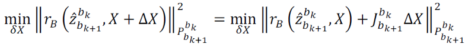
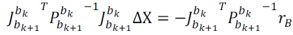
For complete version,
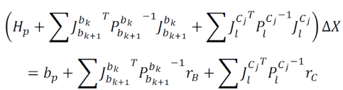
tips
The information matrix for prior constraint is not calculated as  format. more details will be discussed later.
format. more details will be discussed later.
How to interpret the marginalization operation during sliding window
In order to control the optimization computation scale, VINS-Mono has adopt the sliding window otherwise the new feature points and pose will generate lots of residual items. →
The information matrix  will be super large and hard to calculate its inverse matrix.
will be super large and hard to calculate its inverse matrix.
Then the problem would be how to remove its previous pose and feature points. We can't remove these old data directly. otherwise, the new estimation will be inconsistent with or total different from the previous observation outside the sliding window.
Let's start from the state before marginalization  . if we want to remove the state
. if we want to remove the state  and add new state
and add new state  as figure below.
as figure below.
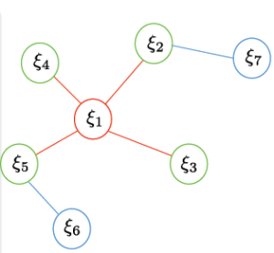
Then the information matrix
will be updated with Schur Complement,
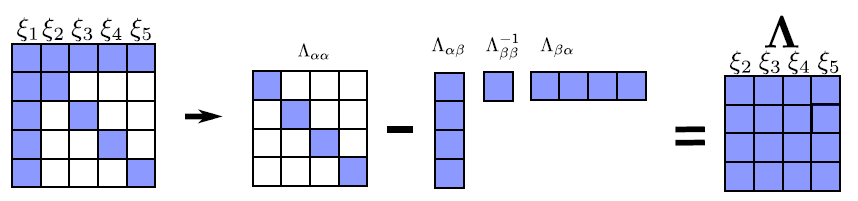
After marginalization, the old observation and old state are gone. The Jacobian matrix and error function are fixed. So the  and
and  are fixed from now on. However, the rest state
are fixed from now on. However, the rest state  will be updated with the new state
. Then the equation
will be updated with the new state
. Then the equation  will cause the optimization solver broken. At least, we need the
update at the same time. Actually, VINS-Mono choose to minimize the
. Let's check the first Taylor expansion of
,
will cause the optimization solver broken. At least, we need the
update at the same time. Actually, VINS-Mono choose to minimize the
. Let's check the first Taylor expansion of
,


we know the Jacobian and covariance matrix from prior are fixed constant.

Let's look at the prior constraint  . Again, the Jacobian and covariance matrix from prior are fixed constant.
. Again, the Jacobian and covariance matrix from prior are fixed constant.


Then we found prior constraint in cost function will minimize the
. We can also prove it inside the code.
In order to meet the requirement of "Ceres solver" interface,


the error prior will be added to the total cost function so that the optimization will make the current estimation consistent with previous "removed" observation.
// Problem::Marginalizeerr_prior_ = -Jt_prior_inv_ * b_prior_;// this err term will be added to total cost to control the optimization process in LM solver// Problem::IsGoodStepInLMtempChi += err_prior_.norm();double rho = (currentChi_ - tempChi) / scale;if (rho > 0 && isfinite(tempChi)){...}Beside that, the VINS-Mono will update the information matrix
with new state
by first expanding the dimension of
and then adding it with new  . The previous component will also be propagate to the later frame to
make the current estimation consistent with previous "removed" observation.
. The previous component will also be propagate to the later frame to
make the current estimation consistent with previous "removed" observation.
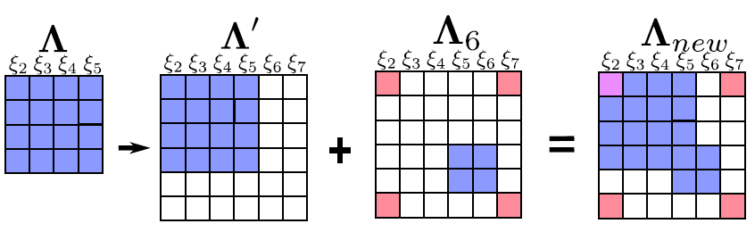
How to deal with IMU pre-integration residual and bias/noise
The IMU pre-integration residual from keyframe k to k+1 (contains many IMU measurements) is defined as below. The optimization process will make the estimated PVQ consistent with IMU measurement (pre-integration),
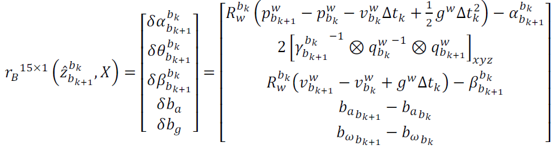
The optimized parameters can be categorized into 4 class, PVQ, bias for acceleration and gyroscope at time k and k+1.
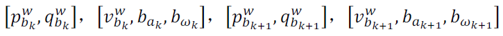
please be aware of the dimension of the Jacobian matrix of  , J:15*32?? , see code in "
EdgeImu
::
ComputeJacobians
()
"
, J:15*32?? , see code in "
EdgeImu
::
ComputeJacobians
()
"
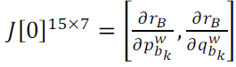
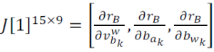
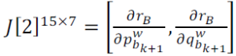
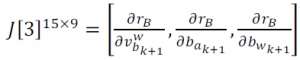
Then let's see how to define the uncertainty/covariance matrix of IMU pre-integration between keyframe k and k+1. It will be used in LM/Gaussian-Newton nonlinear least square optimization.
Before we've got lost in lots of math equations, let's think how to define the error propagation for any nonlinear system from previous time to current time.
Given an nonlinear function  to describe the transform from state
to describe the transform from state  to state
to state  , and
, and  is system control vector. If we've got the covariance matrix for
, how to compute the covariance matrix for
? Let's use first order Taylor expansion again.
is system control vector. If we've got the covariance matrix for
, how to compute the covariance matrix for
? Let's use first order Taylor expansion again.
Suppose state  ,
,  is ground truth and
is ground truth and  is error term, the noise for control vector
is error term, the noise for control vector  is
is  .
.
We can compute the error term  from previous error term
from previous error term  with
with  , where F is the Jacobian matrix of state
against
, G is the Jacobian matrix of state
against
.
, where F is the Jacobian matrix of state
against
, G is the Jacobian matrix of state
against
.
Here is a prove step,
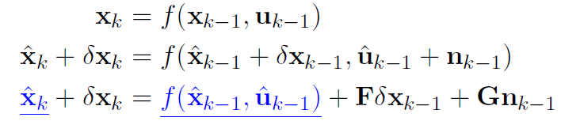
Once we have the error propagation equation from state
to state
, we can write the covariance of state
as  , where initial
, where initial  and the Q is noise covariance matrix.
and the Q is noise covariance matrix.
Now let's go back to our problem how to compute the covariance matrix of the IMU pre-integration term
,
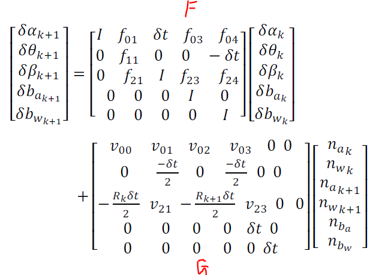
The math detail of F is shit and we can ignore it. We can get the covariance matrix of the IMU pre-integration term
as

where Q is as, the noise is already known.
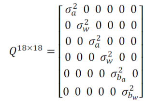
In addition, we can also get the propagation equation  for Jacobian matrix of
from
, if we compute the Jacobian of (PVQ, ba, bg) over the error state propagation equation for both left and right side.
for Jacobian matrix of
from
, if we compute the Jacobian of (PVQ, ba, bg) over the error state propagation equation for both left and right side.
With the propagation Jacobian matrix, the optimization will be faster. The initial value  .
.
tips
The Jacobian here is different from the Jacobian defined in the cost function.
in cost function, the Jacobian is

here, the Jacobian is

the is

// include\factor\integration_base.h::midPointIntegration Vector3d w_x = 0.5 * (_gyr_0 + _gyr_1) - linearized_bg; Vector3d a_0_x = _acc_0 - linearized_ba; Vector3d a_1_x = _acc_1 - linearized_ba; Matrix3d R_w_x, R_a_0_x, R_a_1_x; R_w_x<<0, -w_x(2), w_x(1), w_x(2), 0, -w_x(0), -w_x(1), w_x(0), 0; R_a_0_x<<0, -a_0_x(2), a_0_x(1), a_0_x(2), 0, -a_0_x(0), -a_0_x(1), a_0_x(0), 0; R_a_1_x<<0, -a_1_x(2), a_1_x(1), a_1_x(2), 0, -a_1_x(0), -a_1_x(1), a_1_x(0), 0; MatrixXd F = MatrixXd::Zero(15, 15); F.block<3, 3>(0, 0) = Matrix3d::Identity(); F.block<3, 3>(0, 3) = -0.25 * delta_q.toRotationMatrix() * R_a_0_x * _dt * _dt + -0.25 * result_delta_q.toRotationMatrix() * R_a_1_x * (Matrix3d::Identity() - R_w_x * _dt) * _dt * _dt; F.block<3, 3>(0, 6) = MatrixXd::Identity(3,3) * _dt; F.block<3, 3>(0, 9) = -0.25 * (delta_q.toRotationMatrix() + result_delta_q.toRotationMatrix()) * _dt * _dt; F.block<3, 3>(0, 12) = -0.25 * result_delta_q.toRotationMatrix() * R_a_1_x * _dt * _dt * -_dt; F.block<3, 3>(3, 3) = Matrix3d::Identity() - R_w_x * _dt; F.block<3, 3>(3, 12) = -1.0 * MatrixXd::Identity(3,3) * _dt; F.block<3, 3>(6, 3) = -0.5 * delta_q.toRotationMatrix() * R_a_0_x * _dt + -0.5 * result_delta_q.toRotationMatrix() * R_a_1_x * (Matrix3d::Identity() - R_w_x * _dt) * _dt; F.block<3, 3>(6, 6) = Matrix3d::Identity(); F.block<3, 3>(6, 9) = -0.5 * (delta_q.toRotationMatrix() + result_delta_q.toRotationMatrix()) * _dt; F.block<3, 3>(6, 12) = -0.5 * result_delta_q.toRotationMatrix() * R_a_1_x * _dt * -_dt; F.block<3, 3>(9, 9) = Matrix3d::Identity(); F.block<3, 3>(12, 12) = Matrix3d::Identity(); //cout<<"A"< MatrixXd V = MatrixXd::Zero(15,18); V.block<3, 3>(0, 0) = 0.25 * delta_q.toRotationMatrix() * _dt * _dt; V.block<3, 3>(0, 3) = 0.25 * -result_delta_q.toRotationMatrix() * R_a_1_x * _dt * _dt * 0.5 * _dt; V.block<3, 3>(0, 6) = 0.25 * result_delta_q.toRotationMatrix() * _dt * _dt; V.block<3, 3>(0, 9) = V.block<3, 3>(0, 3); V.block<3, 3>(3, 3) = 0.5 * MatrixXd::Identity(3,3) * _dt; V.block<3, 3>(3, 9) = 0.5 * MatrixXd::Identity(3,3) * _dt; V.block<3, 3>(6, 0) = 0.5 * delta_q.toRotationMatrix() * _dt; V.block<3, 3>(6, 3) = 0.5 * -result_delta_q.toRotationMatrix() * R_a_1_x * _dt * 0.5 * _dt; V.block<3, 3>(6, 6) = 0.5 * result_delta_q.toRotationMatrix() * _dt; V.block<3, 3>(6, 9) = V.block<3, 3>(6, 3); V.block<3, 3>(9, 12) = MatrixXd::Identity(3,3) * _dt; V.block<3, 3>(12, 15) = MatrixXd::Identity(3,3) * _dt; //step_jacobian = F; //step_V = V; jacobian = F * jacobian; covariance = F * covariance * F.transpose() + V * noise * V.transpose();There is one more thing that the IMU pre-integration is based on the assumption the bias of acceleration and rotation is fixed between keyframe k+1 and k. We can see the optimization will also change the bias, it seems we need to repropagate the pre-integration term. That's a lot of computation.
Let's approximate the new pre-integration with first order Taylor expansion of bias. We think the bias changes are small so that we can use linear approximation of bias.
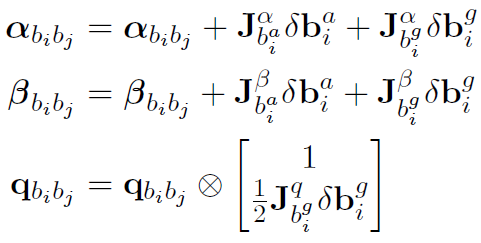
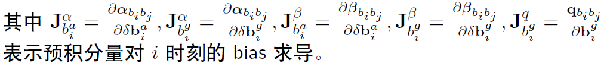
The Jacobian matrix of bias comes from "propagation equation" of Jacobian matrix mentioned above. Actually, the pre-integration correction is happened during computing residual.
// called in EdgeImu::ComputeResidual Eigen::Matrix<double, 15, 1> evaluate(const Eigen::Vector3d &Pi, const Eigen::Quaterniond &Qi, const Eigen::Vector3d &Vi, const Eigen::Vector3d &Bai, const Eigen::Vector3d &Bgi, const Eigen::Vector3d &Pj, const Eigen::Quaterniond &Qj, const Eigen::Vector3d &Vj, const Eigen::Vector3d &Baj, const Eigen::Vector3d &Bgj) { Eigen::Matrix<double, 15, 1> residuals; // //Yako score // 1. Get the PQV vector of the pre -accumulated point to the gyroscope and the accelerated Jacques matrix Eigen::Matrix3d dp_dba = jacobian.block<3, 3>(O_P, O_BA); Eigen::Matrix3d dp_dbg = jacobian.block<3, 3>(O_P, O_BG); Eigen::Matrix3d dq_dbg = jacobian.block<3, 3>(O_R, O_BG); Eigen::Matrix3d dv_dba = jacobian.block<3, 3>(O_V, O_BA); Eigen::Matrix3d dv_dbg = jacobian.block<3, 3>(O_V, O_BG); // 2. Calculate the change of bias Eigen::Vector3d dba = Bai - linearized_ba; Eigen::Vector3d dbg = Bgi - linearized_bg; // 3. Correct the value of the pre -accumulation based on the update of the bias, similar to the first -order Taylor Eigen::Quaterniond corrected_delta_q = delta_q * Utility::deltaQ(dq_dbg * dbg); Eigen::Vector3d corrected_delta_v = delta_v + dv_dba * dba + dv_dbg * dbg; Eigen::Vector3d corrected_delta_p = delta_p + dp_dba * dba + dp_dbg * dbg; // 4. Calculation of residues // Decrease according to the pre -accumulation value corresponding to the current estimation of the current estimation. residuals.block<3, 1>(O_P, 0) = Qi.inverse() * (0.5 * G * sum_dt * sum_dt + Pj - Pi - Vi * sum_dt) - corrected_delta_p; residuals.block<3, 1>(O_R, 0) = 2 * (corrected_delta_q.inverse() * (Qi.inverse() * Qj)).vec(); residuals.block<3, 1>(O_V, 0) = Qi.inverse() * (G * sum_dt + Vj - Vi) - corrected_delta_v; residuals.block<3, 1>(O_BA, 0) = Baj - Bai; residuals.block<3, 1>(O_BG, 0) = Bgj - Bgi; return residuals; }How to deal with visual reprojection residual
The visual reprojection residual will constraint the estimated state to be consistent with the motion observed from visual information (reprojection residual between two keyframes).
In order to fit the optics for different types of camera, including wide-angle, fisheye, or omnidirectional cameras, the reprojection residual can be modeled as a deviations between unit ray connecting the surface of a unit sphere rather than on a generalized image plane for traditional pinhole camera.
Tips, point of n ormalized camera coordinates can be treated as ray direction. With h omogeneous coordinate description, the ray direction between normalized camera coordinates and unit vector should be the same.
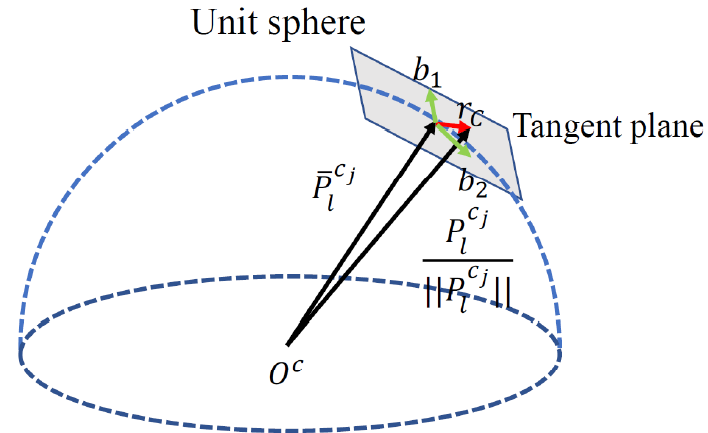
ProjectionFactor::ProjectionFactor(const Eigen::Vector3d &_pts_i, const Eigen::Vector3d &_pts_j) : pts_i(_pts_i), pts_j(_pts_j){#ifdef UNIT_SPHERE_ERROR Eigen::Vector3d b1, b2; Eigen::Vector3d a = pts_j.normalized(); Eigen::Vector3d tmp(0, 0, 1); if(a == tmp) tmp << 1, 0, 0; b1 = (tmp - a * (a.transpose() * tmp)).normalized(); b2 = a.cross(b1); tangent_base.block<1, 3>(0, 0) = b1.transpose(); tangent_base.block<1, 3>(1, 0) = b2.transpose();#endif};Here is our reprojection problem,
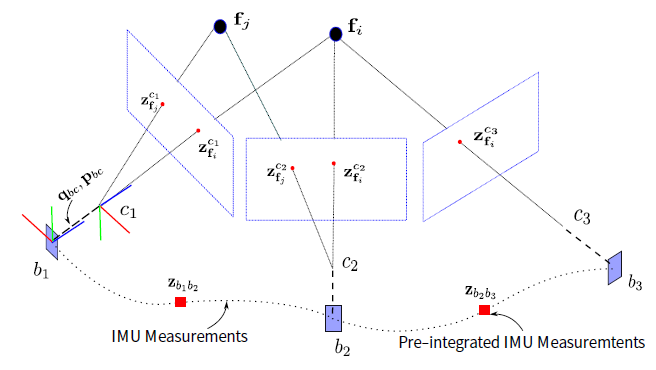
The reprojection residual between the l-th landmark P observed in camera i and its transformed position in camera j is defined as,
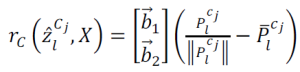
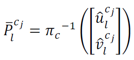
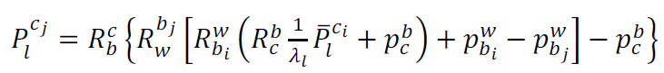
To be evaluated,
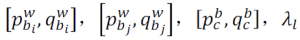
They are the camera pose of i-th and j-th camera, external calibration/relative transformation between IMU and camera, and the l-th inverse depth (more robust on numerical stability) of landmark.
// ProjectionFactor::Evaluate Eigen::Vector3d pts_camera_i = pts_i / inv_dep_i; Eigen::Vector3d pts_imu_i = qic * pts_camera_i + tic; Eigen::Vector3d pts_w = Qi * pts_imu_i + Pi; Eigen::Vector3d pts_imu_j = Qj.inverse() * (pts_w - Pj); Eigen::Vector3d pts_camera_j = qic.inverse() * (pts_imu_j - tic); Eigen::Map residual(residuals); #ifdef UNIT_SPHERE_ERROR residual = tangent_base * (pts_camera_j.normalized() - pts_j.normalized());#else double dep_j = pts_camera_j.z(); residual = (pts_camera_j / dep_j).head<2>() - pts_j.head<2>();#endif residual = sqrt_info * residual;please be aware of the dimension of the Jacobian matrix of  , see code "
EdgeReprojection
::
ComputeJacobians
()
".
, see code "
EdgeReprojection
::
ComputeJacobians
()
".
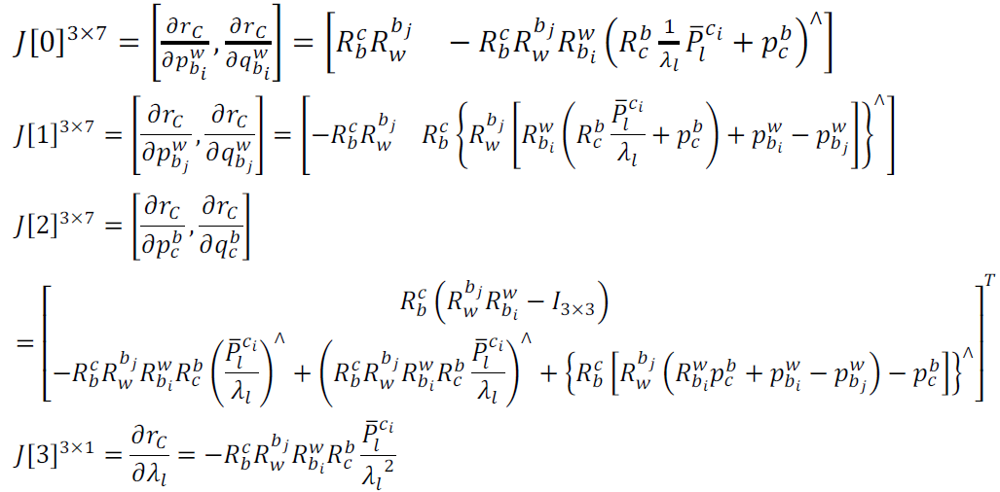
The covariance matrix of visual residual is defined as the shift of some pixels under normalized camera coordinate. Here the code uses 1.5 pixel.
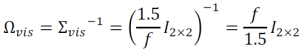
// Estimator::setParameterproject_sqrt_info_ = FOCAL_LENGTH / 1.5 * Matrix2d::Identity();// Estimator::problemSolveedge->SetInformation(project_sqrt_info_.transpose() * project_sqrt_info_);How to solve the scaling factor of visual information and align the visual information with real world
The vision-only SfM (structure from motion) can only estimate a graph of up-to-scale camera poses and feature positions. The unit distance of camera coordinate is not clear. VINS-Mono will estimate the scaling factor of visual information with IMU pre-integration. And then it will estimate the gravity of the first camera pose. Finally, we can recover the depth of 3D landmarks and align the camera coordinate with IMU body frame. This step only happens during VINS initialization. We assume the relative transformation or external calibration between IMU and camera is fixed and known.
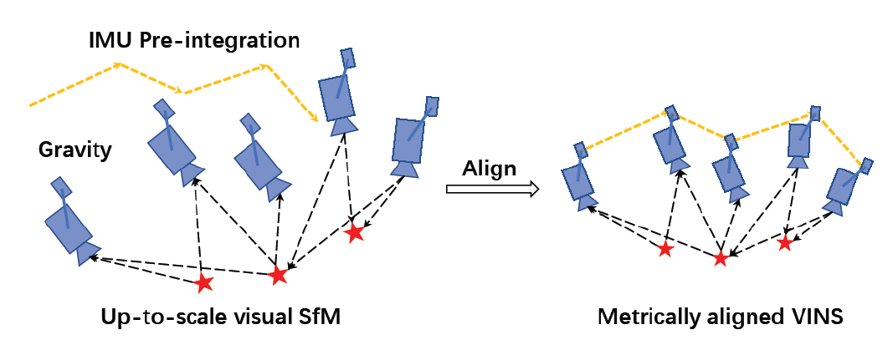
scaling factor estimation
Given the relative poses from Sfm, if they have multiply the scaling value, they should be consistent with the IMU pre-integration value between keyframes. Let's define the residual/error function between sfm pose and IMU pre-integration at keyframe k+1 and k. Ideally, the error function should be zero.
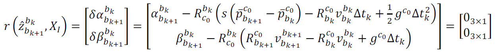
Based on the known/observation value from IMU pre-integration value (α means position, β means velocity), we'd like to estimate,
|
|
description |
dimension |
|
|
linear velocity of IMU body frame when taking keyframe image at time k |
3*1 |
|
|
linear velocity of IMU body frame when taking keyframe image at time k+1 |
3*1 |
|
|
gravity vector at camera coordinate for first camera |
3*1 |
|
|
scale factor |
1*1 |


Given the position and velocity info from IMU, there are two equations as followed, and can be solved with Cholesky decomposition (Hx=b format, H:6*10, x: 10*1)
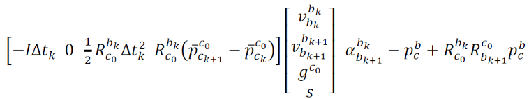
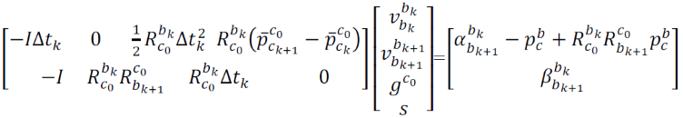
// 2. Construction AX = B and other formulas int i = 0; for (frame_i = all_image_frame.begin(); next(frame_i) != all_image_frame.end(); frame_i++, i++) { frame_j = next(frame_i); MatrixXd tmp_A(6, 10); tmp_A.setZero(); VectorXd tmp_b(6); tmp_b.setZero(); double dt = frame_j->second.pre_integration->sum_dt; tmp_A.block<3, 3>(0, 0) = -dt * Matrix3d::Identity(); tmp_A.block<3, 3>(0, 6) = frame_i->second.R.transpose() * dt * dt / 2 * Matrix3d::Identity(); tmp_A.block<3, 1>(0, 9) = frame_i->second.R.transpose() * (frame_j->second.T - frame_i->second.T) / 100.0; tmp_b.block<3, 1>(0, 0) = frame_j->second.pre_integration->delta_p + frame_i->second.R.transpose() * frame_j->second.R * TIC[0] - TIC[0]; //cout << "delta_p " << frame_j->second.pre_integration->delta_p.transpose() << endl; tmp_A.block<3, 3>(3, 0) = -Matrix3d::Identity(); tmp_A.block<3, 3>(3, 3) = frame_i->second.R.transpose() * frame_j->second.R; tmp_A.block<3, 3>(3, 6) = frame_i->second.R.transpose() * dt * Matrix3d::Identity(); tmp_b.block<3, 1>(3, 0) = frame_j->second.pre_integration->delta_v; //cout << "delta_v " << frame_j->second.pre_integration->delta_v.transpose() << endl; // Add information matrix cov_inv Matrix<double, 6, 6> cov_inv = Matrix<double, 6, 6>::Zero(); //cov.block<6, 6>(0, 0) = IMU_cov[i + 1]; //MatrixXd cov_inv = cov.inverse(); cov_inv.setIdentity(); MatrixXd r_A = tmp_A.transpose() * cov_inv * tmp_A; VectorXd r_b = tmp_A.transpose() * cov_inv * tmp_b; // //Put in all frames A, B; superimposed operation A.block<6, 6>(i * 3, i * 3) += r_A.topLeftCorner<6, 6>(); b.segment<6>(i * 3) += r_b.head<6>(); A.bottomRightCorner<4, 4>() += r_A.bottomRightCorner<4, 4>(); b.tail<4>() += r_b.tail<4>(); A.block<6, 4>(i * 3, n_state - 4) += r_A.topRightCorner<6, 4>(); A.block<4, 6>(n_state - 4, i * 3) += r_A.bottomLeftCorner<4, 6>(); } A = A * 1000.0; b = b * 1000.0; // 3. LDLT decomposition, get the initial value of the scale and G, and judge with the priority x = A.ldlt().solve(b); // Remove the last side scale s from the X -direction of the solution double s = x(n_state - 1) / 100.0; // ROS_DEBUG("estimated scale: %f", s); // Take out the calculation value of gravity vector G g = x.segment<3>(n_state - 4); // ROS_DEBUG_STREAM(" result g " << g.norm() << " " << g.transpose()); if(fabs(g.norm() - G.norm()) > 1.0 || s < 0) { // If the gravity acceleration is too large or the reference value is too large or the scale is negative, the calculation is incorrect return false; }After the linear optimization above, the gravity from equation hasn't considered the "known magnitude 9.81" constraint. VINS Mono will refine the gravity vector estimation by replacing  with
with  .
.
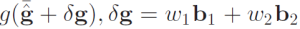
where g(.) is the known magnitude of the gravity,  is the unit vector representing the gravity direction
is the unit vector representing the gravity direction  which has been optimized in previous step. And
which has been optimized in previous step. And  acts as small perturbation item.
acts as small perturbation item.  and
and  are two orthogonal basis spanning the tangent plane. With the new gravity format, we can optimize the initial velocity, scaling factor and gravity again. Now, the direction of new estimated gravity(which is described by
are two orthogonal basis spanning the tangent plane. With the new gravity format, we can optimize the initial velocity, scaling factor and gravity again. Now, the direction of new estimated gravity(which is described by  and
and  ) should have small adjustment around its prior
and the magnitude should be close 9.81
) should have small adjustment around its prior
and the magnitude should be close 9.81
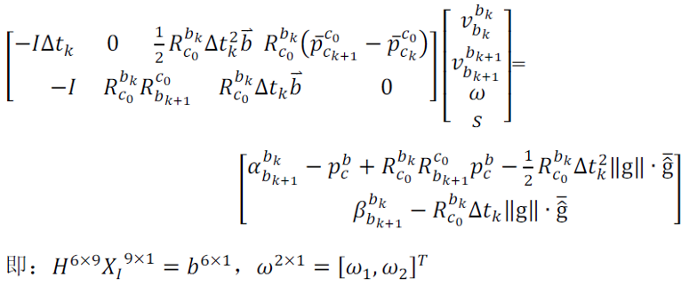
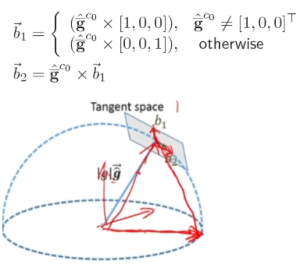
void RefineGravity(map<double, ImageFrame> &all_image_frame, Vector3d &g, VectorXd &x){ // (1) The passing of the parameters and the definition of the container // Add the mold length limit to the G0 Vector3d g0 = g.normalized() * G.norm(); // norm (): Fan Digital, G's mold length, it is known, from the calculation of Lineralalignment Vector3d lx, ly; //VectorXd x; int all_frame_count = all_image_frame.size(); int n_state = all_frame_count * 3 + 2 + 1; MatrixXd A{n_state, n_state}; A.setZero(); VectorXd b{n_state}; b.setZero(); map<double, ImageFrame>::iterator frame_i; map<double, ImageFrame>::iterator frame_j; // (2) iterates a total of four solutions and build a cut space for(int k = 0; k < 4; k++) { MatrixXd lxly(3, 2); // Cut the space to the space and return to B1, B2 in the formula; put the code in the BC matrix lxly = TangentBasis(g0); int i = 0; for (frame_i = all_image_frame.begin(); next(frame_i) != all_image_frame.end(); frame_i++, i++) { frame_j = next(frame_i); MatrixXd tmp_A(6, 9); tmp_A.setZero(); VectorXd tmp_b(6); tmp_b.setZero(); double dt = frame_j->second.pre_integration->sum_dt; tmp_A.block<3, 3>(0, 0) = -dt * Matrix3d::Identity(); tmp_A.block<3, 2>(0, 6) = frame_i->second.R.transpose() * dt * dt / 2 * Matrix3d::Identity() * lxly; tmp_A.block<3, 1>(0, 8) = frame_i->second.R.transpose() * (frame_j->second.T - frame_i->second.T) / 100.0; // G0 known tmp_b.block<3, 1>(0, 0) = frame_j->second.pre_integration->delta_p + frame_i->second.R.transpose() * frame_j->second.R * TIC[0] - TIC[0] - frame_i->second.R.transpose() * dt * dt / 2 * g0; tmp_A.block<3, 3>(3, 0) = -Matrix3d::Identity(); tmp_A.block<3, 3>(3, 3) = frame_i->second.R.transpose() * frame_j->second.R; tmp_A.block<3, 2>(3, 6) = frame_i->second.R.transpose() * dt * Matrix3d::Identity() * lxly; tmp_b.block<3, 1>(3, 0) = frame_j->second.pre_integration->delta_v - frame_i->second.R.transpose() * dt * Matrix3d::Identity() * g0; Matrix<double, 6, 6> cov_inv = Matrix<double, 6, 6>::Zero(); //cov.block<6, 6>(0, 0) = IMU_cov[i + 1]; //MatrixXd cov_inv = cov.inverse(); cov_inv.setIdentity(); MatrixXd r_A = tmp_A.transpose() * cov_inv * tmp_A; VectorXd r_b = tmp_A.transpose() * cov_inv * tmp_b; A.block<6, 6>(i * 3, i * 3) += r_A.topLeftCorner<6, 6>(); b.segment<6>(i * 3) += r_b.head<6>(); A.bottomRightCorner<3, 3>() += r_A.bottomRightCorner<3, 3>(); b.tail<3>() += r_b.tail<3>(); A.block<6, 3>(i * 3, n_state - 3) += r_A.topRightCorner<6, 3>(); A.block<3, 6>(n_state - 3, i * 3) += r_A.bottomLeftCorner<3, 6>(); } A = A * 1000.0; b = b * 1000.0; x = A.ldlt().solve(b); VectorXd dg = x.segment<2>(n_state - 3); g0 = (g0 + lxly * dg).normalized() * G.norm(); //double s = x(n_state - 1); } g = g0;}Once we've got the gravity vector for the first camera, all camera frame can be align with IMU coordinate by comparing the gravity difference between IMU measurement and Camera estimation.
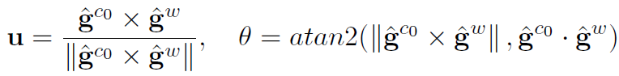
The rotation matrix transform from C0 to body(world) frame as,
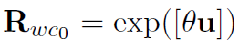
// RS is the rotation of the L frame of the image in the IMU K frame to the sliding window // R0 Rotate the reference coordinate system to the Z axis vertically upward // R2YPR: Rotating matrix or four yuan to Euler Korn // YPR2R: Euler Horing to Rotating Matrix or Four yuan Matrix3d R0 = Utility::g2R(g); // R0 rotates the Y -axis of the reference system to the IMU of the 0 frame. At this time, the X -axis determines to the right double yaw = Utility::R2ypr(R0 * Rs[0]).x(); // The rotating matrix R0 of the camera system to the world coordinate system R0 = Utility::ypr2R(Eigen::Vector3d{-yaw, 0, 0}) * R0; // Just consider the impact of the polar angle g = R0 * g; //Matrix3d rot_diff = R0 * Rs[0].transpose(); // 7. All variables rotate from the reference coordinate system C_L to the world coordinate system W Matrix3d rot_diff = R0; for (int i = 0; i <= frame_count; i++) { Ps[i] = rot_diff * Ps[i]; Rs[i] = rot_diff * Rs[i]; Vs[i] = rot_diff * Vs[i]; }How to support offline mapping and online localization
Online Localization (Relocalization)
Let's assume the map has already been built, if the localizer has visited the place inside the map, how to get the constraint from the map? We call it Loop Closure constraint in VINS-Mono. With loop closure constraint, we can eliminate the accumulated error of sliding window.
The process of loop closure,
loop closure detection by feature matching with DBOW2 + Brief feature descriptors.
relative motion estimation
 between loop closure keyframe with PnP+Ransac algorithm.
between loop closure keyframe with PnP+Ransac algorithm.
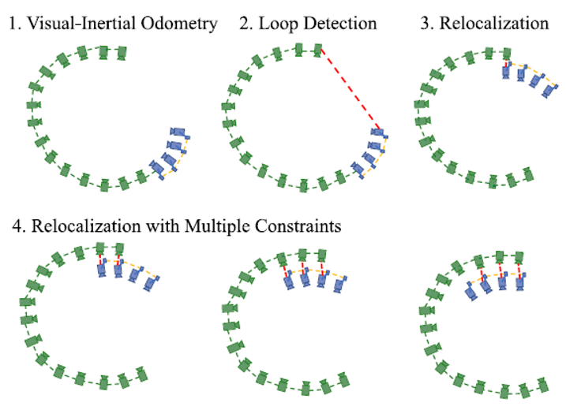
It starts with VIO-only pose estimates (blue in sliding window). Past states are recorded (green, map data). If a loop is detected for the newest keyframe, as shown by the red line in the second plot, a relocalization occurred. Note that due to the use of feature-level correspondences for relocalization, we are able to incorporate loop-closure constraints from multiple past keyframes, as indicated in the last three plots.
Now we can use the loop closure constraint to further improve our sliding window optimization and the localization result will be more accurate.
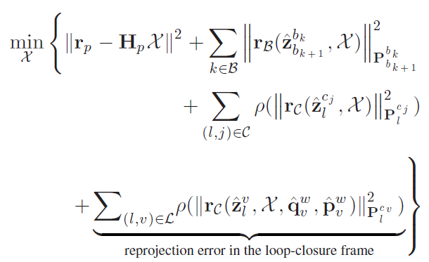
Where  and
and  are pose of two loop closure frame taken from map (pose graph). The
is the relative motion constraint between two loop closure frame. They are all known and constant.
are pose of two loop closure frame taken from map (pose graph). The
is the relative motion constraint between two loop closure frame. They are all known and constant.
The optimizer will constraint the estimated state  so that the relative motion constraint
which depends on state
will be consistent with the map data
and
.
so that the relative motion constraint
which depends on state
will be consistent with the map data
and
.
bool PoseLocalParameterization::Plus(const double *x, const double *delta, double *x_plus_delta) const{ Eigen::Map<const Eigen::Vector3d> _p(x); Eigen::Map<const Eigen::Quaterniond> _q(x + 3); Eigen::Map<const Eigen::Vector3d> dp(delta); Eigen::Quaterniond dq = Utility::deltaQ(Eigen::Map<const Eigen::Vector3d>(delta + 3)); Eigen::Map p(x_plus_delta); Eigen::Map q(x_plus_delta + 3); p = _p + dp; q = (_q * dq).normalized(); return true;}// Estimator::optimizationVector3d pts_j = Vector3d(match_points[retrive_feature_index].x(), match_points[retrive_feature_index].y(), 1.0);Vector3d pts_i = it_per_id.feature_per_frame[0].point; ProjectionFactor *f = new ProjectionFactor(pts_i, pts_j);problem.AddResidualBlock(f, loss_function, para_Pose[start], relo_Pose, para_Ex_Pose[0], para_Feature[feature_index]);retrive_feature_index++;The Jacobian matrix and covariance matrix is Identity.
Offline Mapping
We will add the vertex which is removed/margianlized from sliding window into map and make sure this new added vertex will be consistent globally.
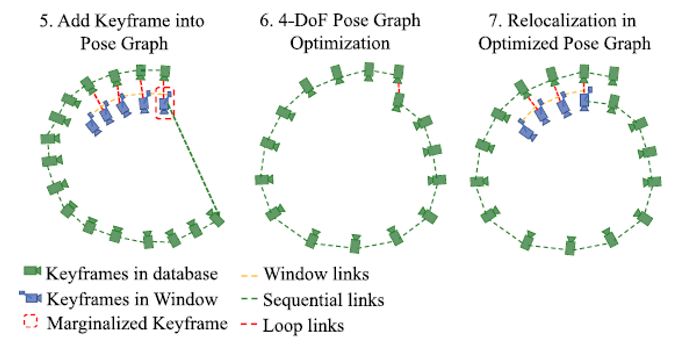
Here is the steps for global pose graph optimization.
A keyframe is added into the pose graph when it is marginalized out from the sliding window. If there is a loop between this keyframe and any other past keyframes, the loop-closure constraints, formulated as 4-DOF relative rigid body transforms, will also be added to the pose graph. The pose graph is optimized using all relative pose constraints n a separate thread, and the relocalization module always runs with respect to the newest pose graph configuration.
VINS-Mono has defined two type of edges to optimize the pose graph.
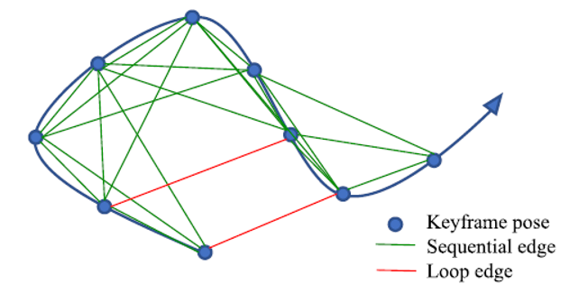
Sequential Edge
sequential edge represents the relative transformation between two keyframes, which is taken directly from VIO in sliding window.
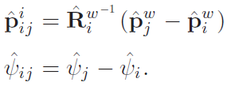
Loop-Closure Edge
If the keyframe has a loop connection, it connects the loop-closure frame by a loop-closure edge in the pose graph. Similarly, the loop-closure edge only contains a 4-DOF relative pose transform that is defined the same as Sequential Edge. The value of the loop-closure edge is obtained using results from relocalization.
pose graph residual definition,
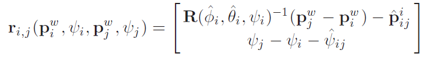
here is the cost function regrading pose graph, we want the pose graph to be consistent with sequential edge S and loop closure edge L. see code " PoseGraph :: optimize4DoF "
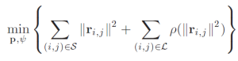
tips
Once the gravity is determined, the roll and pitch is observable. So the pose angle of object can only rotate on the horizontal plane. Hence the vertex of pose graph has 4 Degree of Freedom.
Saved Map Format
frame idx
vertex pose position and rotation
loop closure frame idx
relative position and yaw angle between loop closure frame
2D feature location + brief feature descriptors
pFile = fopen (file_path.c_str(),"w");fprintf (pFile, " %d %f %f %f %f %f %f %f %f %f %f %f %f %f %f %f %d %f %f %f %f %f %f %f %f %d\n",(*it)->index, (*it)->time_stamp, VIO_tmp_T.x(), VIO_tmp_T.y(), VIO_tmp_T.z(), PG_tmp_T.x(), PG_tmp_T.y(), PG_tmp_T.z(), VIO_tmp_Q.w(), VIO_tmp_Q.x(), VIO_tmp_Q.y(), VIO_tmp_Q.z(), PG_tmp_Q.w(), PG_tmp_Q.x(), PG_tmp_Q.y(), PG_tmp_Q.z(), (*it)->loop_index, (*it)->loop_info(0), (*it)->loop_info(1), (*it)->loop_info(2), (*it)->loop_info(3), (*it)->loop_info(4), (*it)->loop_info(5), (*it)->loop_info(6), (*it)->loop_info(7), (int)(*it)->keypoints.size());How to deal with the delay between camera and IMU
see another paper "Online Temporal Calibration for Monocular Visual-Inertial Systems".
Assume the temporal offset between IMU and Camera is constant but unknown value.
Known Issue Collection (Continually updated )
usually, the vehicle will move on a flat plane, there is no activation from IMU (hard to tell bias or noise from constant acceleration and rotation) → the VIN will get degradation.
the latency between camera and IMU should be less than 5ms.
VINS-Mono depends on lots of feature points would be computational expensive for embedded device.